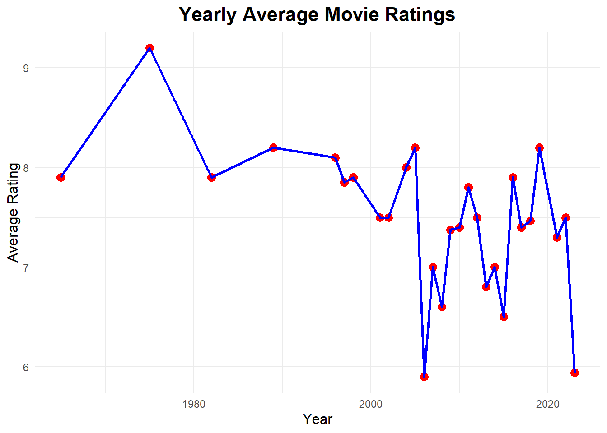
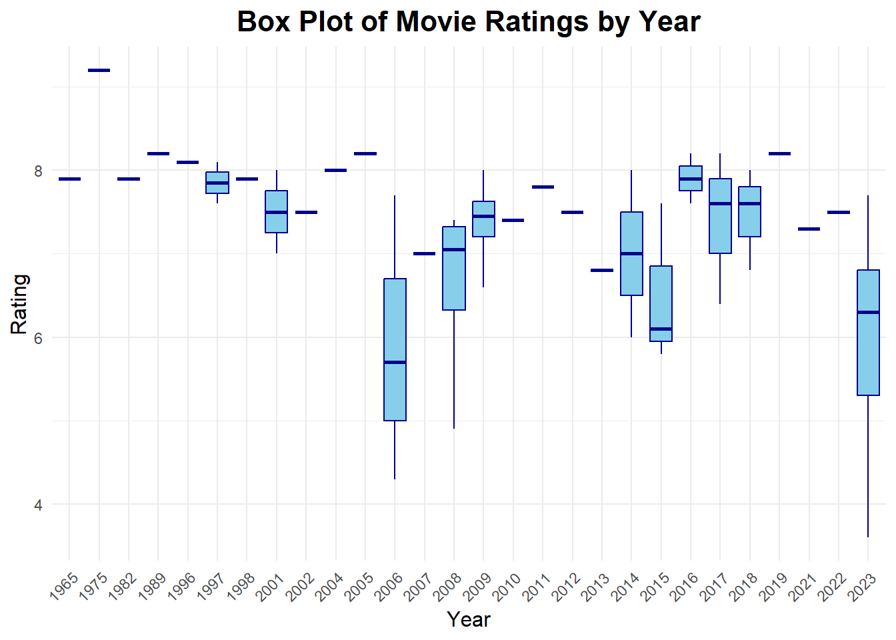

# combining 2 URL's into a single vectorurl_1 <-"https://m.imdb.com/search/title/?title_type=feature&release_date=2010-01-01,2023-12-31&num_votes=2500,&country_of_origin=TR&count=250"url_2 <-"https://m.imdb.com/search/title/?title_type=feature&release_date=,2009-12-31&num_votes=2500,&country_of_origin=TR&count=250"combine_vector <-c(url_1, url_2)# creating empty vectorstitles <-c()years <-c()durations <-c()ratings <-c()votes <-c()# Scrapping the datafor (url in combine_vector) { page <-read_html(url)# Extract movie names title_names <- page %>%html_nodes('.ipc-title__text') %>%html_text() title_names <-tail(head(title_names, -1), -1) title_names <-str_split(title_names, " ", n=2) title_names <-unlist(lapply(title_names, function(x) {x[2]}))# Extract year year <- page %>%html_nodes('.sc-300a8231-7:nth-child(1)') %>%html_text() %>%substr(1, 4) %>%as.numeric()# Extract rating rating <- page %>%html_nodes('.ipc-rating-star--rating') %>%html_text() %>%substr(1, 3) %>%as.numeric()# Extract number of votes vote <- page %>%html_nodes(".ipc-rating-star--voteCount") %>%html_text() %>%parse_number() vote <-gsub("\\(|\\)| ", "", vote) vote <-as.numeric(vote)# Extract duration duration <- page %>%html_nodes('.sc-300a8231-7:nth-child(2)') %>%html_text()# Extract hour part, if present hour <-str_extract(duration, "\\d+h") %>%str_replace("h", "") %>%as.numeric()# If hour is NA, set it to 0 hour[is.na(hour)] <-0# Extract minute part, if present minute <-str_extract(duration, "\\d+m") %>%str_replace("m", "") %>%as.numeric()# If minute is NA, set it to 0 minute[is.na(minute)] <-0# Calculate total duration total_duration <- (hour *60) + minute# Append data to vectors titles <-append(titles, title_names) years <-append(years, year) ratings <-append(ratings, rating) votes <-append(votes, vote) durations <-append(durations, total_duration)}# Create a data frame from the scraped dataimdb_data <-data.frame(Title = titles, Year = years, Duration = durations, Rating = ratings, Votes = votes)# Print the first few rowsprint(head(imdb_data))
Title Year Duration Rating Votes
1 Kuru Otlar Üstüne 2023 197 7.7 16
2 Yedinci Kogustaki Mucize 2019 132 8.2 58
3 Baskin 2015 97 5.8 13
4 Kis Uykusu 2014 196 8.0 57
5 Cebimdeki Yabanci 2018 95 6.8 10
6 Ayla 2017 125 8.2 45
As seen here, our data set, which we scrapped from the IMDB website, contains the columns Title, Year, Duration, Rating and Votes respectively. Votes values here represent thousands. (16 => 16K, 4.1 => 4.1K)
Due to the problem that arose during the scrapping process, the dataset consists of 50 movies, 25 in the first URL (between 2009 and 2023) and the first 25 in the second URL (before 2009).
Since the data set does not include all movies, the comments made are based on only the 50 movies selected here for all Turkish movies.
Finding the Highest and Lowest Rated Movies
Code
# Sort by rating in descending order and get the top 5top_5 <- imdb_data %>%arrange(desc(Rating)) %>%head(5)print(top_5)
Title Year Duration Rating Votes
1 Hababam Sinifi 1975 85 9.2 44
2 Yedinci Kogustaki Mucize 2019 132 8.2 58
3 Ayla 2017 125 8.2 45
4 Dag II 2016 135 8.2 111
5 Babam ve Oglum 2005 108 8.2 96
As seen here, the top 5 movies with the highest ratings are “Hababam Sınıfı”, “Yedinci Koğuştaki Mucize”, “Ayla”, “Dağ2” and “Babam ve Oğlum”.
I have only watched Hababam Sınıfı out of these movies and I can say that it deserves such a high rating without a doubt.
Code
# Sort by rating in ascending order and get the bottom 5bottom_5 <- imdb_data %>%arrange(Rating) %>%head(5)print(bottom_5)
Title Year Duration Rating Votes
1 Bihter 2023 113 3.6 4.1
2 D@bbe 2006 110 4.3 4.9
3 Recep Ivedik 2008 90 4.9 30.0
4 Istanbul Için Son Çagri 2023 91 5.3 9.6
5 Kurtlar Vadisi: Irak 2006 122 5.7 19.0
As seen here, the top 5 movies with the lowest ratings are “Bihter”, “Dabbe”, “Recep İvedik”, “İstanbul İçin Son Çağrı” and “Kurtlar Vadisi: Irak”.
The fact that I haven’t watched any of these movies may be a sign that I have good taste in movies. 😀
Seeing Rating Values of Selected Movies
Code
# Filter the data for the movies "Aile Arasında" and "Av Mevsimi"selected_movies <- imdb_data %>%filter(Title %in%c("Aile Arasinda", "Av Mevsimi"))# Print the resultsprint(selected_movies[, c("Title", "Rating")])
Title Rating
1 Av Mevsimi 7.4
2 Aile Arasinda 7.6
Here you can see the rating values of my favorite movies, “Aile Arasında” and “Av Mevsimi”. I was expecting it to come out between 7 and 8.
Yearly Average Movie Ratings
Code
# Calculate the average rating for each yearyearly_avg <- imdb_data %>%group_by(Year) %>%summarise(Average_Rating =mean(Rating, na.rm =TRUE))# Plotting yearly average ratingsggplot(yearly_avg, aes(x = Year, y = Average_Rating)) +geom_point(color ="red", size =3) +geom_line(color ="blue", size =1) +labs(title ="Yearly Average Movie Ratings",x ="Year",y ="Average Rating" ) +theme_minimal() +theme(plot.title =element_text(hjust =0.5, size =16, face ="bold"),axis.title.x =element_text(size =12),axis.title.y =element_text(size =12) )
Warning: Using `size` aesthetic for lines was deprecated in ggplot2 3.4.0.
i Please use `linewidth` instead.

This chart shows the average rating values of movies for each year and their changes from year to year. Accordingly, it can be seen that there was a sharp decline in the early 2000s and that it fluctuated after that point. I would like to remind you again that these comments do not reflect the truth, as our data set only includes 50 films.
Box Plot of Movie Ratings by Year
Code
# Create a box plot for yearly movie ratingsggplot(imdb_data, aes(x =factor(Year), y = Rating)) +geom_boxplot(fill ="skyblue", color ="darkblue", outlier.color ="red") +labs(title ="Box Plot of Movie Ratings by Year",x ="Year",y ="Rating" ) +theme_minimal() +theme(plot.title =element_text(hjust =0.5, size =16, face ="bold"),axis.title.x =element_text(size =12),axis.title.y =element_text(size =12),axis.text.x =element_text(angle =45, hjust =1) )

As can be seen here, the rating values of the films in 2006 and 2023 were more widely distributed compared to other years. Since “Hababam Sınıfı” had the highest rating value in 1975, it was the highest in both this and the previous graph.
Correlation Between Votes and Ratings
Code
# Calculate correlation between Votes and Ratingcorrelation <-cor(imdb_data$Votes, imdb_data$Rating, use ="complete.obs")# Print the correlation resultprint(paste("Correlation between Votes and Rating: ", correlation))
[1] "Correlation between Votes and Rating: 0.480028537590679"
As seen here, the correlation between votes and rating is not very clear. We cannot say that a movie that gets a lot of votes will have a high rating value.
Correlation Between Durations and Ratings
Code
# Calculate correlation between Durations and Ratingcorrelation <-cor(imdb_data$Duration, imdb_data$Rating, use ="complete.obs")# Print the correlation resultprint(paste("Correlation between Durations and Rating: ", correlation))
[1] "Correlation between Durations and Rating: 0.225018765415274"
Here, the correlation between duration and rating is much lower. There is almost no relationship between them.
IMDB Top 1000 Turkish Movies
Code
# Scrapping Turkish Movies in top 1000url_new <-"https://m.imdb.com/search/title/?title_type=feature&groups=top_1000&country_of_origin=TR"# creating empty vectorstitles <-c()years <-c()durations <-c()ratings <-c()votes <-c()for(url in url_new){ page =read_html(url)# Extract movie namestitle_names <- page %>%html_nodes('.ipc-title__text') %>%html_text()title_names <-tail(head(title_names, -1), -1)title_names <-str_split(title_names, " ", n=2)title_names <-unlist(lapply(title_names, function(x) {x[2]}))# Extract yearyear <- page %>%html_nodes('.sc-300a8231-7:nth-child(1)') %>%html_text() %>%substr(1, 4) %>%as.numeric()# Extract ratingrating <- page %>%html_nodes('.ipc-rating-star--rating') %>%html_text() %>%substr(1, 3) %>%as.numeric()# Extract number of votesvote <- page %>%html_nodes(".ipc-rating-star--voteCount") %>%html_text() %>%parse_number()vote <-gsub("\\(|\\)| ", "", vote)vote <-as.numeric(vote)# Extract durationduration <- page %>%html_nodes('.sc-300a8231-7:nth-child(2)') %>%html_text()# Extract hour part, if presenthour <-str_extract(duration, "\\d+h") %>%str_replace("h", "") %>%as.numeric()# If hour is NA, set it to 0hour[is.na(hour)] <-0# Extract minute part, if presentminute <-str_extract(duration, "\\d+m") %>%str_replace("m", "") %>%as.numeric()# If minute is NA, set it to 0minute[is.na(minute)] <-0# Calculate total durationtotal_duration <- (hour *60) + minute# Append data to vectorstitles <-append(titles, title_names)years <-append(years, year)ratings <-append(ratings, rating)votes <-append(votes, vote)durations <-append(durations, total_duration)}# Create a data frame from the scraped datatop1000_turkish <-data.frame(Title = titles, Year = years, Duration = durations, Rating = ratings, Votes = votes)# Print the dataframe print(top1000_turkish[1:2])
Title Year
1 Yedinci Kogustaki Mucize 2019
2 Kis Uykusu 2014
3 Ayla 2017
4 Bir Zamanlar Anadolu'da 2011
5 Babam ve Oglum 2005
6 Ahlat Agaci 2018
7 G.O.R.A. 2004
8 Eskiya 1996
9 Nefes 2009
10 Vizontele 2001
11 Her Sey Çok Güzel Olacak 1998
Here we see Turkish movies that are among the top 1000 movies on IMDB. There are 11 movies in total.
Code
# Sorting from largest to smallest according to rating valuetop1000_turkish_sorted <- top1000_turkish[order(-top1000_turkish$Rating), ]print(top1000_turkish_sorted)
Title Year Duration Rating Votes
1 Yedinci Kogustaki Mucize 2019 132 8.2 58
3 Ayla 2017 125 8.2 45
5 Babam ve Oglum 2005 108 8.2 96
8 Eskiya 1996 128 8.1 73
11 Her Sey Çok Güzel Olacak 1998 107 8.1 29
2 Kis Uykusu 2014 196 8.0 57
6 Ahlat Agaci 2018 188 8.0 29
7 G.O.R.A. 2004 127 8.0 69
9 Nefes 2009 128 8.0 36
10 Vizontele 2001 110 8.0 40
4 Bir Zamanlar Anadolu'da 2011 157 7.8 52
Here is a list of these 11 movies ranked by rating.
This ranking does not match the ranking I made before. For example, Hababam Sınıfı is not even on the list. For this reason, I think they may have considered other categories besides rating.